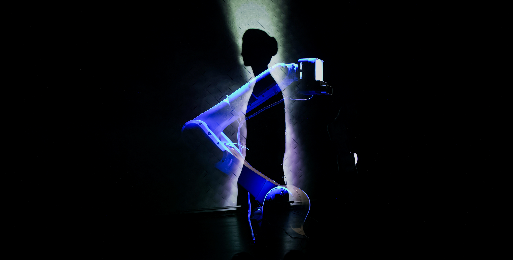
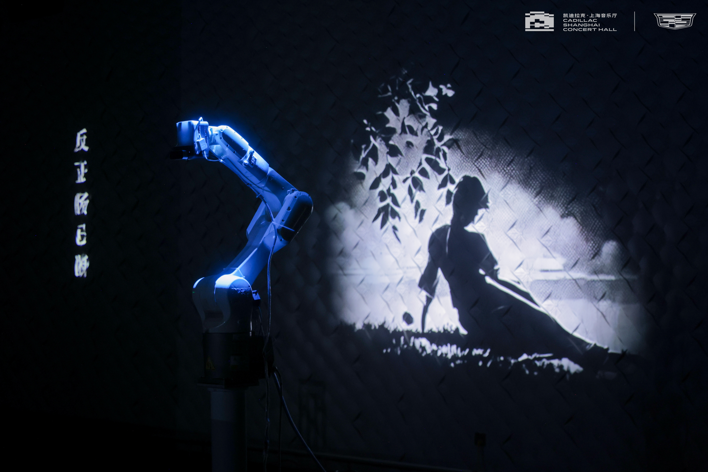
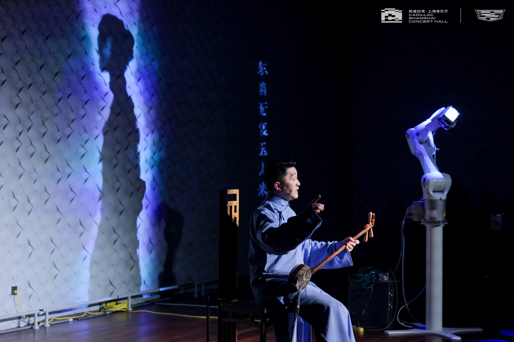
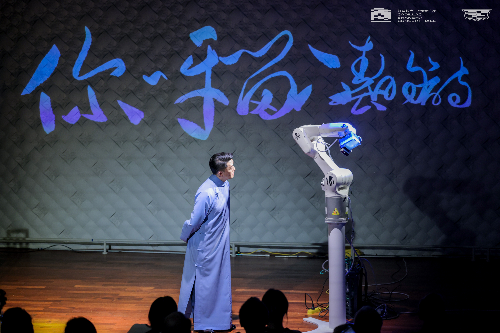
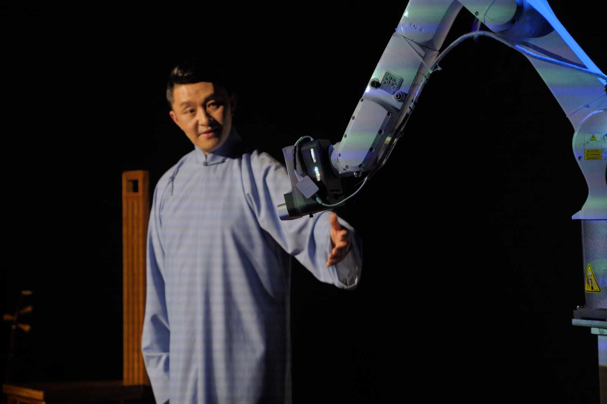
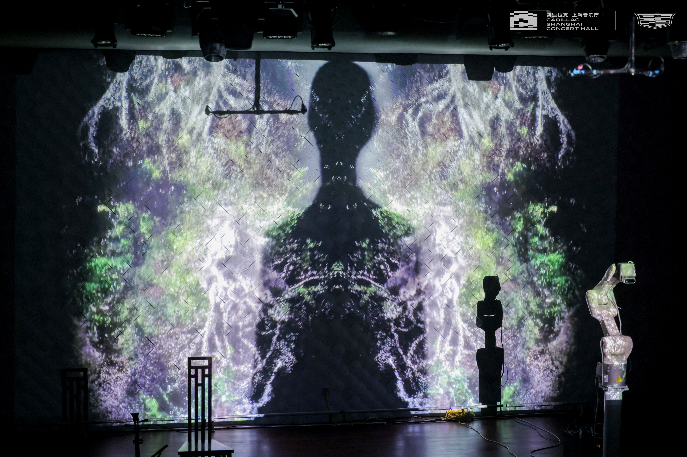
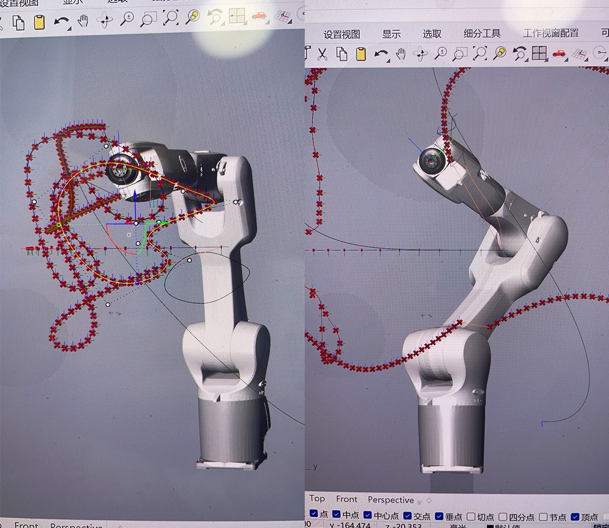
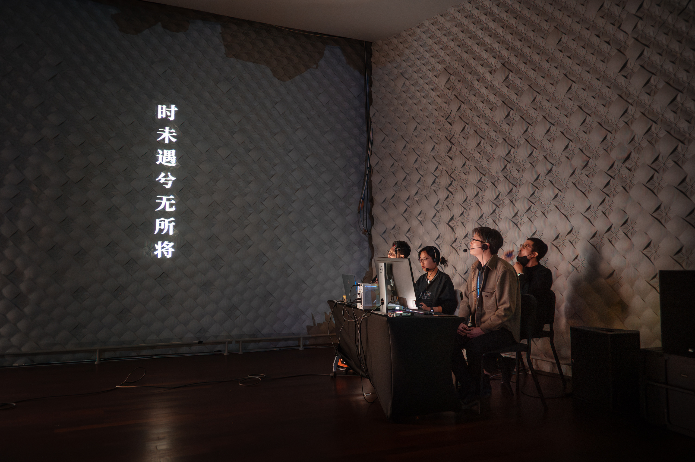

Melodic Echo Odyssey
An experimental narrative concert that merges AI-generated music, robotic arm choreography, computer vision, and Chinese Pingtan to reinterpret cultural memory. Inspired by the storytelling tradition of Pingtan, the performance weaves traditional influences with new media into an immersive journey through history and sound.
In collaboration with artists, engineers, performers and technologists, my role was to choreograph the robotic arm and operate it live during the performance.





BEHIND THE SCENE

